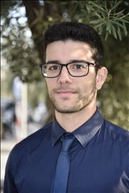

About me

Hello, my name is Antonios Koliarakis! I was born on 30/12/1997 and I am from Athens, Greece. Programming is
my passion due to my interest in creating things and exploring new ideas. Problem solving also
stimulates the brain! I would identify myself as a perfectionist, that never stops until the desired
result is achieved.
My interest in computer science was triggered when I was still a kid playing video games and wondered
"How can a picture move when I tell it to?!". After that I started researching with moderate
success. It wasn't until my enrollment in university and my first real programming classes that my
initial question would finally be answered and I would really understand. And that was when I fell
in love.
When I am not programming you will probably find me in the gym working out while listening to some music,
hanging out with friends or watching some quality TV series.
Programming & Devolpment
- C#
- Javascript
- CSS
- HTML
- SQL
- PHP
- AJAX
- REST
Frameworks
- .NET - Core & Classic
- React JS
- Entity Framework
- Bootstrap
- DevExpress
- ML.NET
Operating Systems
Miscellaneous
- Git - GitHub
- Azure DevOps
- Database usage and design
- MS Office
- 2022
Department of Informatics and Computer Engineering, University of West Attica
- 2015
1st High School of Palaio Faliro
Relational Technology SA, 2018 - 2022
-
Web Developer, 2019 - 2022
Migrated one of the main products of the company from desktop to web technologies, resulting in huge gains in performance, security, scalability and future expandability. The product was oriented towards the banking sector.
Also, amended existing web services and developed new ones for communication with third party systems.
In addition, provided support for existing applications and services.
Occasionally, duties of a Business Analyst were required that included specification negotiation, definition and extraction from the client.
-
First level technical support, 2018 - 2019
Researching, diagnosing, troubleshooting and identifying solutions to resolve system issues, as reported by clients.
- IIS server & site deployment and configuration, Relational
Technology SA.
- Sybase ASE SQL Server and EAS Application Server management,
installation and configuration, Relational Technology SA.
-
Application presentation and specification definition, extraction
and negotiation with potential client, Relational Technology SA.
- A. Koliarakis, A. Krouska, C. Troussas and C. Sgouropoulou, "Modified collaborative filtering for hybrid recommender systems and personalized search: The case of digital library," 2022 17th International Workshop on Semantic and Social Media Adaptation & Personalization (SMAP), Corfu, Greece, 2022, pp. 1-6, doi: 10.1109/SMAP56125.2022.9942020.
https://ieeexplore.ieee.org/abstract/document/9942020